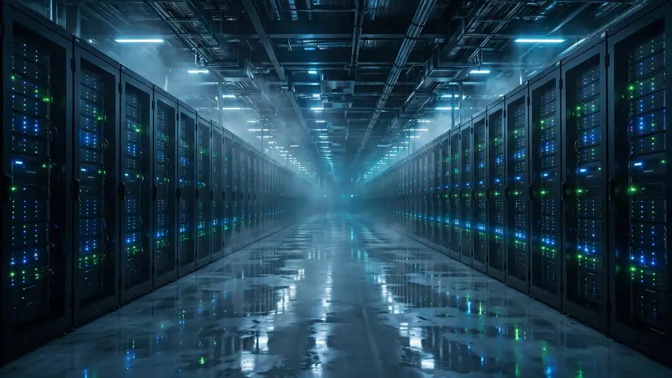
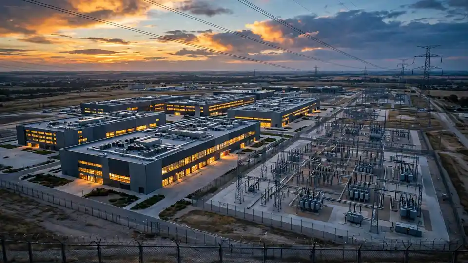

SWI Group raises €800M at a €6.1B valuation to build AI compute on both sides of the Atlantic
Euronext Amsterdam-listed SWI Group announced on Monday an €800 million capital increase at a €6.1 billion final valuation — a transaction the company says will accelerate the expansion of its transatlantic AI infrastructure and compute platform.
Euronext Amsterdam-listed SWI Group announced on Monday an €800 million capital increase with institutional investors at a €6.1 billion final valuation — a transaction the company says will accelerate the expansion of its transatlantic AI infrastructure and compute platform.
The capital increase, issued through new ordinary shares by the group’s listed holding company SWI Capital Holding Ltd. (ticker SWICH) in several series, takes total share capital to 558,399,385 ordinary shares and pushes the equity SWI has raised since March 2026 past €1 billion.
“This transaction is about keeping up to speed with the compute and data center markets. We have a clear strategy, a substantial pipeline and a strong position across Europe and the United States,” said Max-Hervé George, the group’s founder and chief executive officer, in the announcement. “We are very pleased to welcome new investors who share our long-term ambition for the Group.”
Where the money goes
The proceeds are earmarked for data-center and AI compute capacity on both sides of the Atlantic: power infrastructure, compute deployments and the execution of the group’s development pipeline. SWI says the raise materially strengthens its balance sheet, broadens its institutional shareholder base and lifts its free float to roughly 20% of share capital.
The raise builds on a transformation SWI detailed in August, when it said more than 80% of its capital was allocated to a transatlantic digital-infrastructure platform with a combined power capacity exceeding 4 gigawatts — with a stated aim of pushing that share above 90% over time.
Its American arm is SWI Digital, the renamed Genesis Digital Assets, in which SWI completed a controlling-stake acquisition of more than 70% with Morgan Stanley acting as exclusive financial adviser. The company describes it as an energized, grid-connected land bank — a scaled US foothold for AI and high-performance-computing capacity.
In Europe, the group’s AiOnX platform is developing hyperscale, AI-ready data-center campuses in Ireland, the United Kingdom, Denmark, Spain and Italy, with one site already secured by a leading hyperscale tenant. On top of the land and power, SWI says it is building a proprietary in-house AI-cloud platform to deliver GPU-accelerated compute to enterprises, research institutions and AI developers.

Following the money
The October raise follows a €260 million private placement in March with founder Max-Hervé George and co-investor Aliya Fund Limited at €5.20 per share — funds earmarked in part for a significant stake in a US data-center company the group then called “TargetCo”.
It also closes a chapter on Polarise: the two companies mutually agreed not to complete their originally proposed transaction, under which SWI would have taken a majority stake. SWI will instead provide financing to accelerate Polarise’s expansion, with the two remaining separate entities.

Power is the new prize
The through-line in 2026’s infrastructure land grab is unglamorous: the bottleneck for frontier AI is not just GPUs, it is powered, grid-connected land where those GPUs can legally run. A €6.1 billion valuation for land, grid access and a development pipeline across the Atlantic is the market putting a price on that scarcity.
The release itself notes it contains information that is or may constitute inside information under the EU’s Market Abuse Regulation — listed-company language for “this moves markets.” For SWI, the bet is straightforward: control the powered land and the compute follows. It now has €800 million more to buy it.